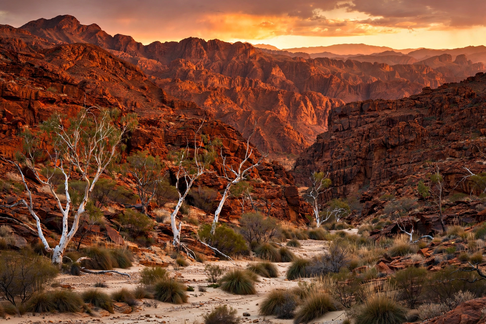

| Location | Northern Territory, Australia |
|---|---|
| Length | 644 km (400 mi) east–west |
| Highest point | Mount Zeil, 1,531 m |
| Named for | Sir Richard MacDonnell, Governor of South Australia |
The MacDonnell Ranges (Arrernte: Tyurretye) are a series of mountain ranges in the Northern Territory of Australia, running east and west of Alice Springs for some 644 kilometres. They consist of parallel ridges of red quartzite and sandstone formed in the Alice Springs Orogeny about 350 million years ago.
Gaps cut through the ranges — such as Heavitree Gap, Simpsons Gap, Standley Chasm, Ellery Creek Big Hole, Glen Helen, Ormiston Gorge and Palm Valley — hold permanent waterholes important to Arrernte people and wildlife. The West MacDonnell National Park and the 223 km Larapinta Trail are major attractions, and ghost gums of the ranges were famously painted by Albert Namatjira.